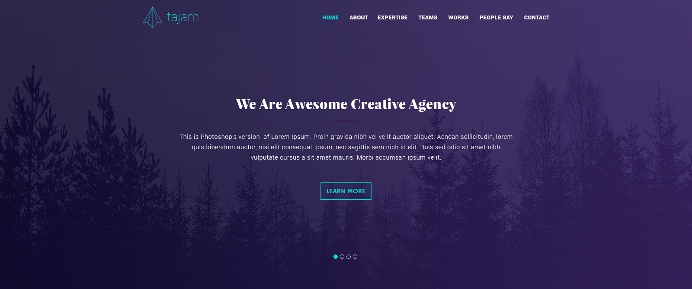
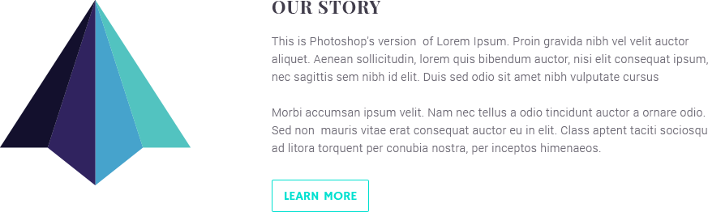
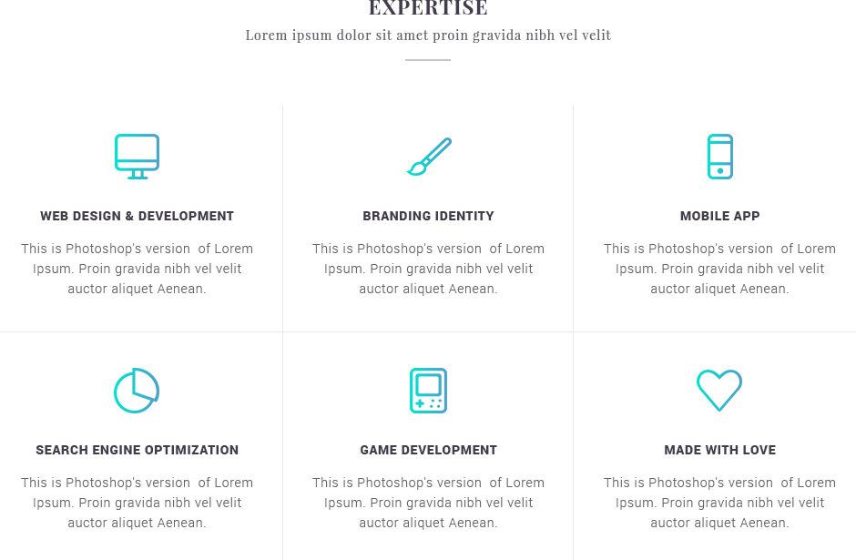
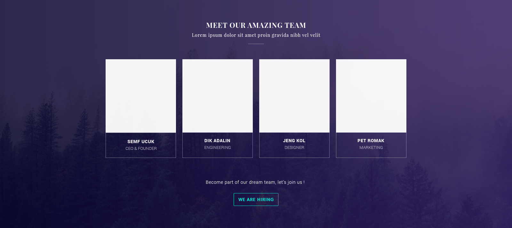
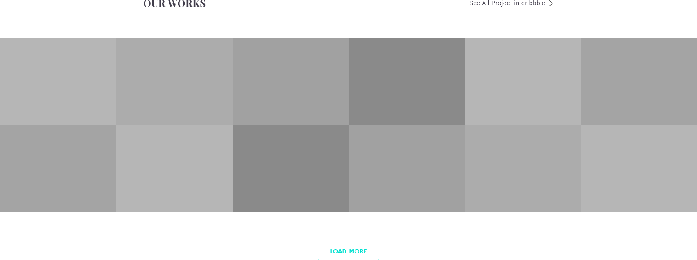
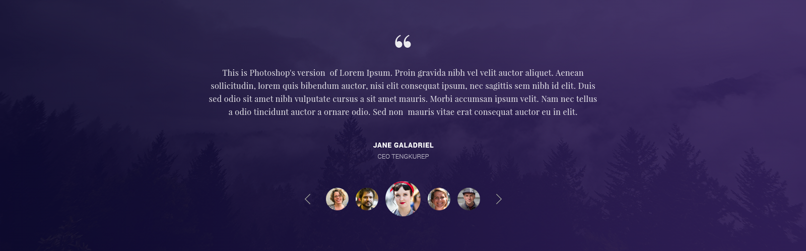
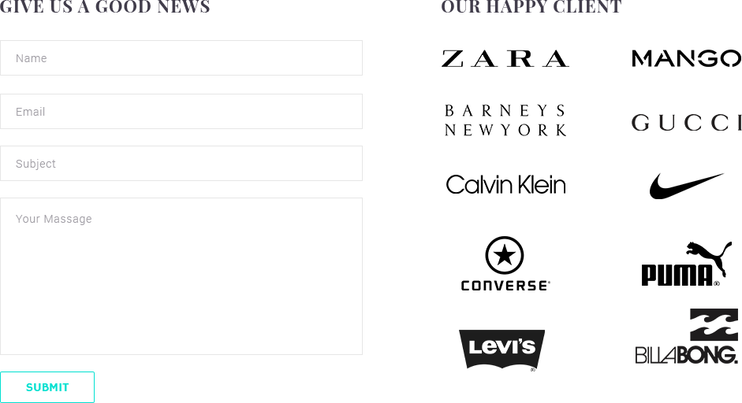
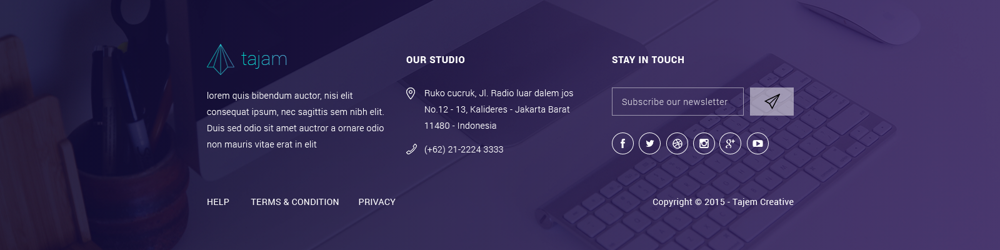

Обзор шаблона «Tajam»
Шаблон "Tajam" был разработан на основе последней из существующих версих Bootstrap 4.1.3. Шаблон имеет 9 основных секции:
-
Header
Блок Header содержит в себе навигационную панель. Внутри навигационной панеле находится ссылочный логотип и меню.
Под навигационной панелью распологается слайдер сожержащий 4 слайда.
На фоне в хедере распологается картинка, которая должна быть растянута на 100% ширины экрана.
- Content
-
Section "Our Story"
Секция "Our Story" содержит в себе flex-контейнер, который позиционирует элементы страницы в зависимости от размеров экрана на котором открыт шаблон.
 -
Section "Our Story Video"
В секции "Our Story Video" в середине распологается кнопка "Play", по нажатию на которую на экране анимированным движение отображается модальное окно содержащее видео для просмотра.
-
Section "Expertise"
В секции "Expertise" расположились 6 карточек с информацией, данные карточки ведут себя отзывчивым образом , то есть при отображении данной секции на различных размерах экранов, карточки будут автоматически заполнять всю свободную область секции не вызывая горизонтального скролла.
 -
Section "Meet Our Amazing Team"
Секция "Meet Our Amazing Team", практически аналогичная секция предыдущей но с исключение того что в данной секции есть фон созданный картинкой и добавлена кнопка.
 -
Section "Our Works"
Секция "Our Works" занимает 100% экрана на любых их размерах. В секции находятся 12 блоков, которые ведут себя отзывчивым образом.
 -
Section "Testimonials"
Секция "Testimonials" практически такая же секция как и Header с исключением того, что в данной секции отстуствует навигационная панель и слайдер немного видоизменен. В слайдере вместо обычных индикаторов используются маленькие фото людей, которые оставили свои отзывы и при открытии какого либо отзыва, фото немного увеличивается.
 -
Section "Contact"
Секция "Contact" содержит форму для внесения данных и перечень изображений.

-
Section "Our Story"
-
Footer
Секция "Footer" содержит контактные данные, ссылки, иконочные шрифты, обычную кнопку, поле ввода и ссылочный логотип.

Верстка шаблона "Tajam" производилась с учетом всех семантических особенностей на основе HTML5,
CSS3 и языка
программирования JavaScript.
С целью самодокументации кода, была использована методология БЭМ.
Выполненный шаблон полностью адаптивен и поддерживается различными браузерами на 87.21%
(Информация взята
с сайта Can i use ), а так же корректно отображается на экранах
любых устройств будь то телефон или планшет в любых их ориентациях.
Блоки шаблона разрабатывались с учетом "Модуля Макета Гибкого Контейнера" или иначе говоря на основе технологии CSS FlexBox.
Формы добавленные в шаблон учитывают передачу данных на сервер.
Различные интерактивные элементы шаблона разрабатывались на основе макросных элементов кода фреймверка BootStrap 4 и на основе языка JavaScript без использования сторонних библиотек.
В помимо анимаций и прочего в шаблоне были произведены все необходимые работы с текстом, ссылками, параграфами, заголовками, изображениями и hovet-эффектами
PSD-шаблон был взят из сети с целью тренировки и закрепления изученного материала.
Для непосредственного осмотра и тестирования качества выполнения работы нажмите на кнопку
"Тестировать", если хотите скачать проект,
нажмите на кнопку "Скачать".